Main Page
Namespaces
Classes
Files
Class List
Class Hierarchy
Class Members
Class Hierarchy
Go to the textual class hierarchy
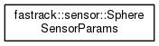
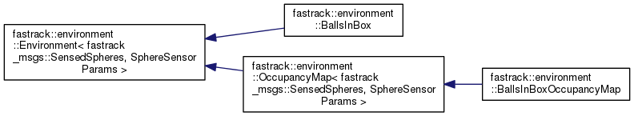
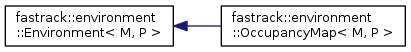
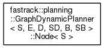
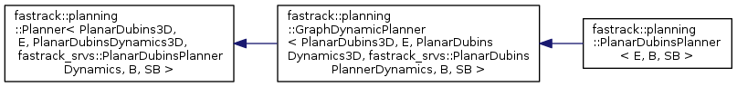
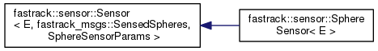
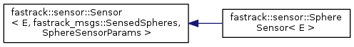
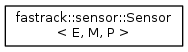
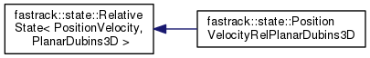
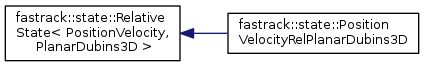
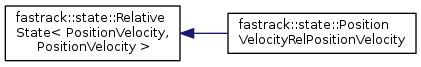
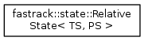
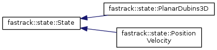
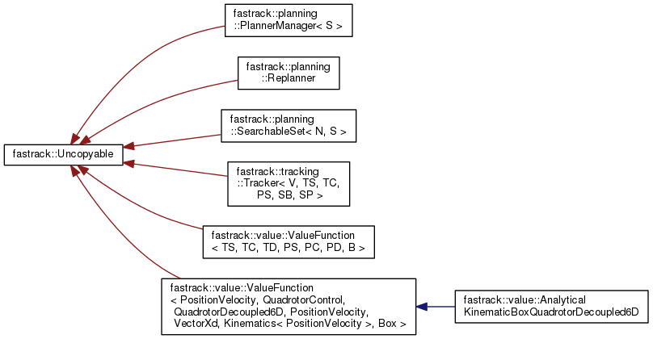
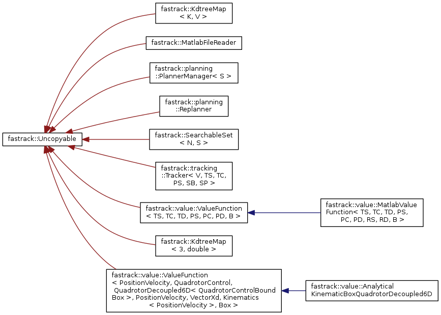
fastrack
Author(s): David Fridovich-Keil
autogenerated on Mon Dec 23 2019 19:45:39